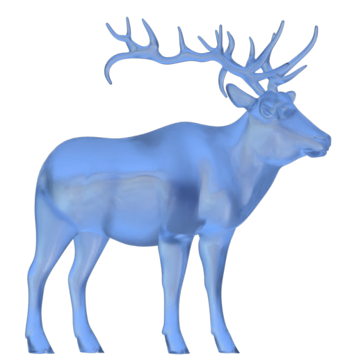

Programming, Ice Cold and Digested.
Welcome!
This website and kvarn.org is running on
the web server Kvarn, a project of which I'm a lead
developer.
I've written
an extensive introduction to programming
which brings up all the major parts of being a full-stack developer;
git, web frameworks, JavaScript, CSS, HTML, and more.
If you need any free APIs, check out my services. For
now, you get DNS lookups, your IP address, and DNS over TLS checks. You
can also search this site using the API.
For some solid privacy arguments for all to relate to, see
my collection.
Maintained projects
An outside reflection of hurricane Ian
Media and news make disasters seem abstract. I detail my
first-hand experience of the aftermath of hurricane Ian,
with photographs delivering the vibe. There's some insights
into climate change and American culture too.
Kvarn web server
My open source web server built with the newest technologies to
be fast and rethinks conventional configuration to make it near
plug and play for all uses.
Online documentation
Online documentation of all my projects, so you can easily
look up how to use them.
Available at the memorable
doc.icelk.dev.
DNS services
Privacy first, secure, and free DNS resolver.
Gives you access (on the web) to DNS lookup, DNS over TLS
verification, and an API to get your public IP.
IOT: httPWM
A open source framework and binary for controlling PWM units,
such as lights and fans. Comes with a nice web app to control a
Raspberry Pi PWM output.
My articles
All my articles, including a comprehensive beginner-friendly
guide to programming, and setting up a complete online
development environment.
If you want to get into programming, but have little prior
knowledge about computers, you can follow
my new introduction to programming.
$[footer]